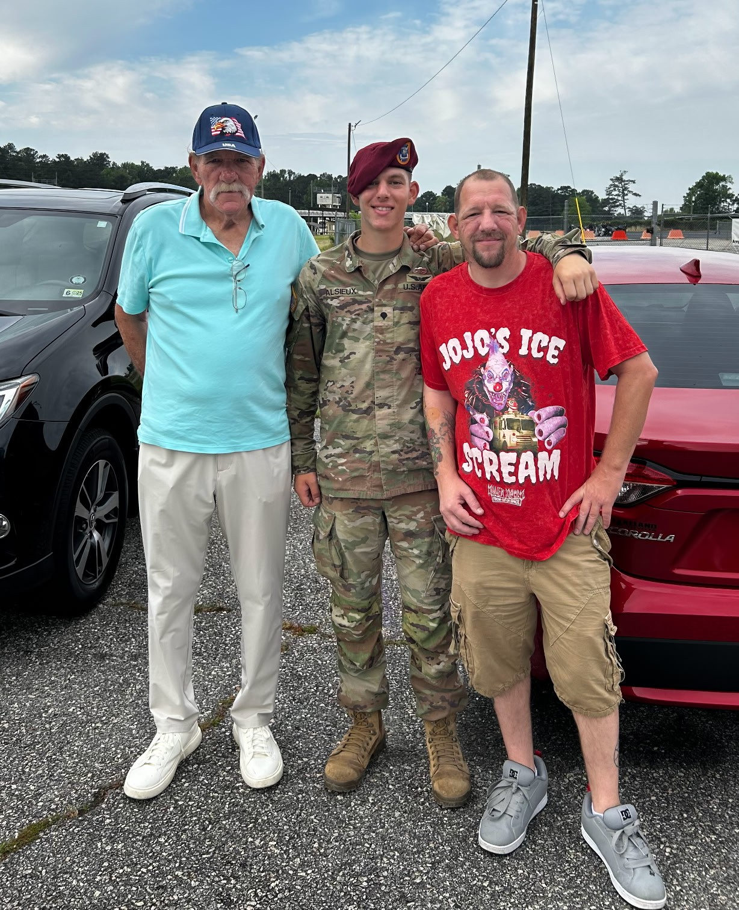

Who is he?

Hello! This page tells you a little bit about my brother, Adam!
A lifelong fan of horror video games and first person shooters, he finds joy in everything from the eerie tension of Resident Evil to the adrenaline of Halo and Call of Duty. Travel has shaped much of his life as well — especially the long road trip looping from Florida to Colorado to New Jersey and back again. After moving from New Jersey to Florida, he later relocated to Colorado so his son, Derek, could finish high school, turning those years into a stretch of memorable coastal adventures.
Food is a simple but meaningful part of his story. Nothing beats a good New Jersey pizza, something he misses deeply while living in Florida — though he’s lucky enough to have a nearby pizzeria run by a fellow Jersey native who keeps the tradition alive. On the opposite end of the spectrum sits eggplant parmesan, which he considers one of the worst foods imaginable.
His proudest accomplishment is raising his son as a single father, and watching Derek join the army remains one of the moments that fills him with the most pride. Not everything has been easy, though. He carries the regret of not saving money earlier in life, and the memory he wishes he could forget is the 2005 accident in which he was struck by a car while pushing Derek in a stroller. He took the full impact, resulting in a disabling back injury — but his son was unharmed, something he remains grateful for every day.

This year brings something joyful to look forward to: both of his sisters are getting married, one in March and one in October, and celebrating those milestones has become a highlight of 2026.
Among his possessions, his massive DVD collection stands out as his most treasured — a growing archive of the movies he’s loved over the years. His top favorites include Drop Dead Fred, Step Brothers, and Masters of the Universe (1987). And if he could share a lunch with anyone, living or dead, he’d choose Jensen Ackles and Jared Padalecki from Supernatural, simply because they seem like genuinely good people he’d enjoy talking with.